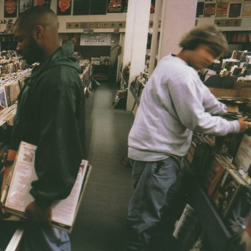

DJ Shadow - Endtroducing.....
DJ Shadow's work I generally describe as "Fatboy Slim for 'serious' music fans". He focuses, rather than the catchy hooks and party-ready sounds which characterise the work of Slim and others, on creating a mood or atmosphere through long pieces, and yet the two artists have solidarity in that they both achieve this almost entirely through samples. And unlike similar records (Since I Left You by the Avalanches or Donuts by J Dilla) which have short bursts before moving on quickly, DJ Shadow's work is characterised by long instrumentals which don't necessarily keep your conscious attention, but keep your subconscious engaged. His debut album Endtroducing..... is by far the most well known of his work, and is often regarded as one of the best hip-hop records ever, despite featuring no original rapping at all. The title itself comes from the fact that Shadow had already made a name for himself with his distinct style on his first three singles released prior to the album, and so felt that the record itself, which sticks to that same style, would be the end of his introduction.
Now, when you break it down, Shadow actually had five singles before the album's release, although two weren't that well known. The first single was "In/Flux", backed with "Hindsight", which was released in 1993 under the name "DJ Shadow and the Groove Robbers". Then in 1994, Shadow released his second single, "Lost and Found (S.F.L.)", backed by a song by a different artist. The next two singles were ones which weren't as well known: "89.9 Megamix" in 1995, and "Hardcore (Instrumental) Hip Hop" in 1996. There was one other single released around this time, but we'll get to that on the next disc.
DJ Shadow also had two compilation appearances: a remix of "In/Flux" which appeared exclusively on Headz (A Soundtrack of Experimental Beathead Jams), and "DJ Shadow's Theme", which appeared exclusively on The Groove Active Collection. One other note: a DJ mix entitled "Entropy" was released in 1993, but I'm not sure whether to count this as it could be classed as a live set, so I'll leave it for now.
CD 2: Pre-album tracks
| No. | Title | Original release | Length |
|---|---|---|---|
| 1 | In/Flux | "In Flux" / "Hindsight" single, 1993 | 12:16 |
| 2 | Hindsight | 6:52 | |
| 3 | Lost and Found (S.F.L.) | "Lost and Found (S.F.L.)" single, 1994 | 10:06 |
| 4 | In/Flux (Alternative Interlude '93) | Headz compilation, 1994 | 12:10 |
| 5 | 89.9 Megamix + Bonus Beats | "A Whim" (DJ Krush) / "89.9 Megamix" single, 1995 | 8:48 |
| 6 | DJ Shadow's Theme | The Groove Active Collection compilation, 1995 | 5:20 |
| 7 | Hardcore (Instrumental) Hip Hop | "Hardcore (Instrumental) Hip Hop" single, 1996 | 5:14 |
| 8 | Bonus Scratchapella | 1:28 | |
| 9 | Last Stop (Bonus Beat) | 2:28 | |
| 64:43 |
Now, onto singles related to the album, starting with the part of the four-piece suite of releases from earlier that I missed: "What Does Your Soul Look Like". Consisting of four tracks (so really it's an EP, not a single), this release featured songs that were originally intended to go on Shadow's first album, but his record label Strawberry Fields Forever-ed him and put the tracks out as a single, forcing Shadow to start the album afresh. Whether he was on board with this I don't know. Then comes the actual singles from the album: "Midnight in a Perfect World" and "Stem". Shadow did two new versions of the former for the single, while "Stem" featured a new version and two B-sides. Following this was a new single in 1997, "High Noon", which came with a remix of "Organ Donor", a new B-side, and an untitled intro and outro. And then finally a few extra bits: "Untitled Heavy Beat (Part 1 & 2)" from the soundtrack of The End of Violence (1997), "Shadow's Exit Bonus Beat" from a Canadian remix EP, and "Divine Intervention" by Shadow and Divine Styler, which was released as a limited edition single in 1999. Again worth noting is a live DJ mix, this one from 1997, titled "Camel Bobsled Race". Since it's live, it won't be included.
CD 3: Album-related tracks and more
| No. | Title | Original release | Length |
|---|---|---|---|
| 1 | What Does Your Soul Look Like (Part II) | "What Does Your Soul Look Like" single, 1995 | 13:52 |
| 2 | What Does Your Soul Look Like (Part III) | 5:13 | |
| 3 | What Does Your Soul Look Like (Part IV) | 7:13 | |
| 4 | What Does Your Soul Look Like (Part I) | 6:22 | |
| 5 | Midnight in a Perfect World (Extended Vision) | "Midnight in a Perfect World" single, 1996 | 9:53 |
| 6 | Midnight in a Perfect World (Gab Mix) | 5:21 | |
| 7 | Stem (Cops 'n' Robbers) | "Stem" single, 1996 | 3:38 |
| 8 | Red Bus Needs to Leave! | 2:41 | |
| 9 | Soup | 0:43 | |
| 10 | Untitled | "High Noon" single, 1997 | 0:24 |
| 11 | High Noon | 4:00 | |
| 12 | Devil's Advocate (Heaven v. Hell - Bonus Beat) | 4:20 | |
| 13 | Organ Donor (Extended Overhaul) | 4:29 | |
| 14 | Untitled | 0:19 | |
| 15 | Untitled Heavy Beat (Part 1 & 2) | The End of Vioelnce soundtrack, 1997 | 3:02 |
| 16 | Shadow's Exit Bonus Beat | The Remix EP, 1997 | 2:10 |
| 17 | Divine Intervention (Vinyl Version) | "Divine Intervention" limited edition single with Divine Styler, 1999 | 5:21 |
| 74:21 |
Yes, "What Does Your Soul Look Like" is in that order. Don't ask me, that's how it was presented on the original release!

Released: 16 September 1996
Length: 63:23
Genre: Instrumental hip-hop, trip hop
Personal rating: 10 / 10
Favourite song: "Midnight in a Perfect World"
- "Best Foot Forward" – 0:49
- "Building Steam with a Grain of Salt" – 6:40
- "The Number Song" – 4:40
- "Changeling" / "Transmission 1" – 7:51
- "What Does Your Soul Look Like" (Part 4) – 5:08
- Untitled – 0:24
- "Stem" / "Long Stem" / "Transmission 2" – 9:21
- "Mutual Slump" – 4:02
- "Organ Donor" – 1:57
- "Why Hip Hop Sucks in '96" – 0:43
- "Midnight in a Perfect World" – 4:57
- "Napalm Brain" / "Scatter Brain" – 9:23
- "What Does Your Soul Look Like" (Part 1 - Blue Sky Revisit) / "Transmission 3" – 7:28